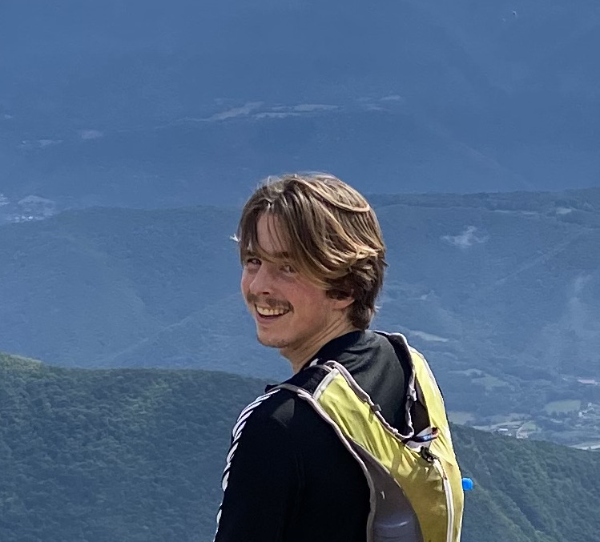
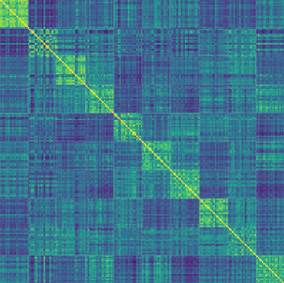
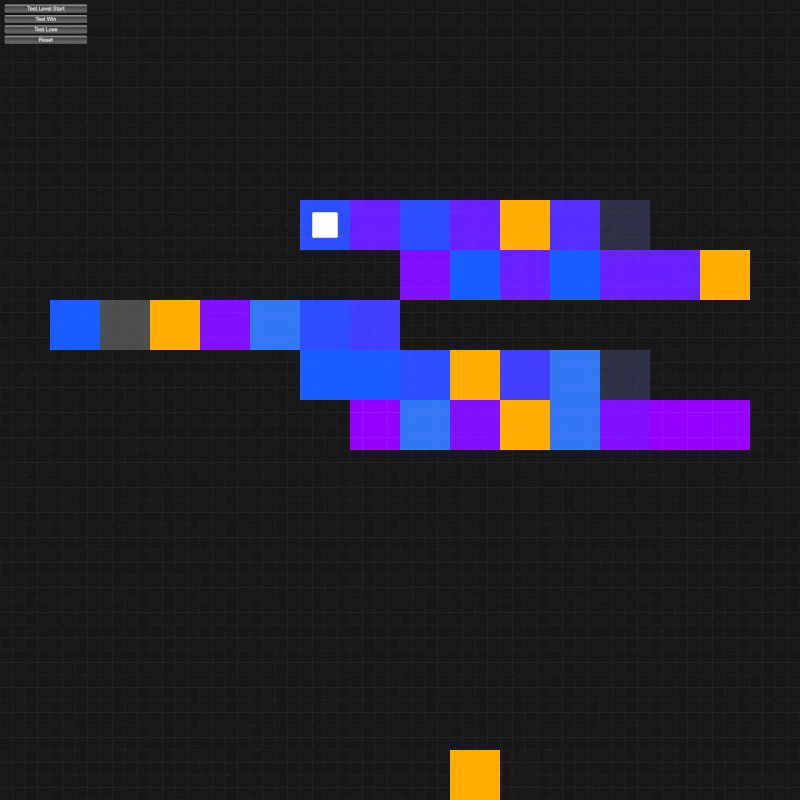
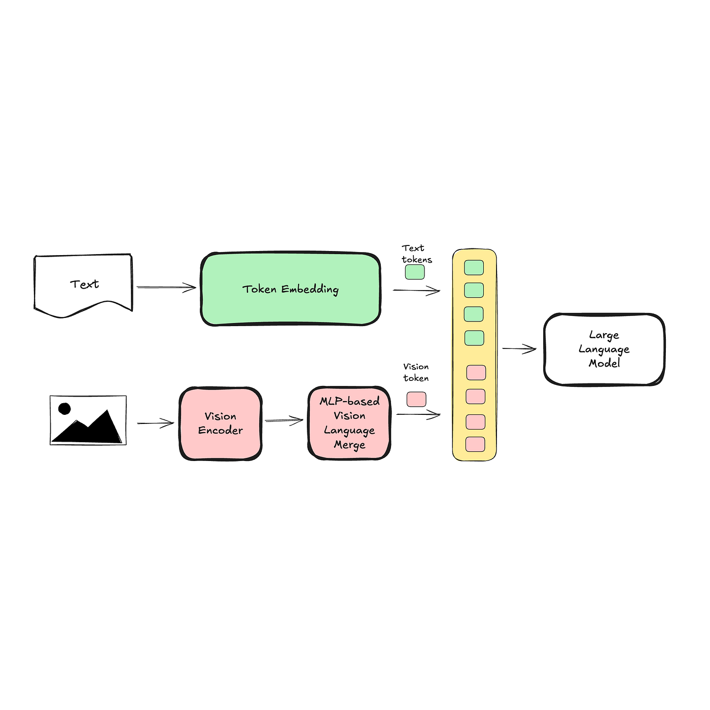
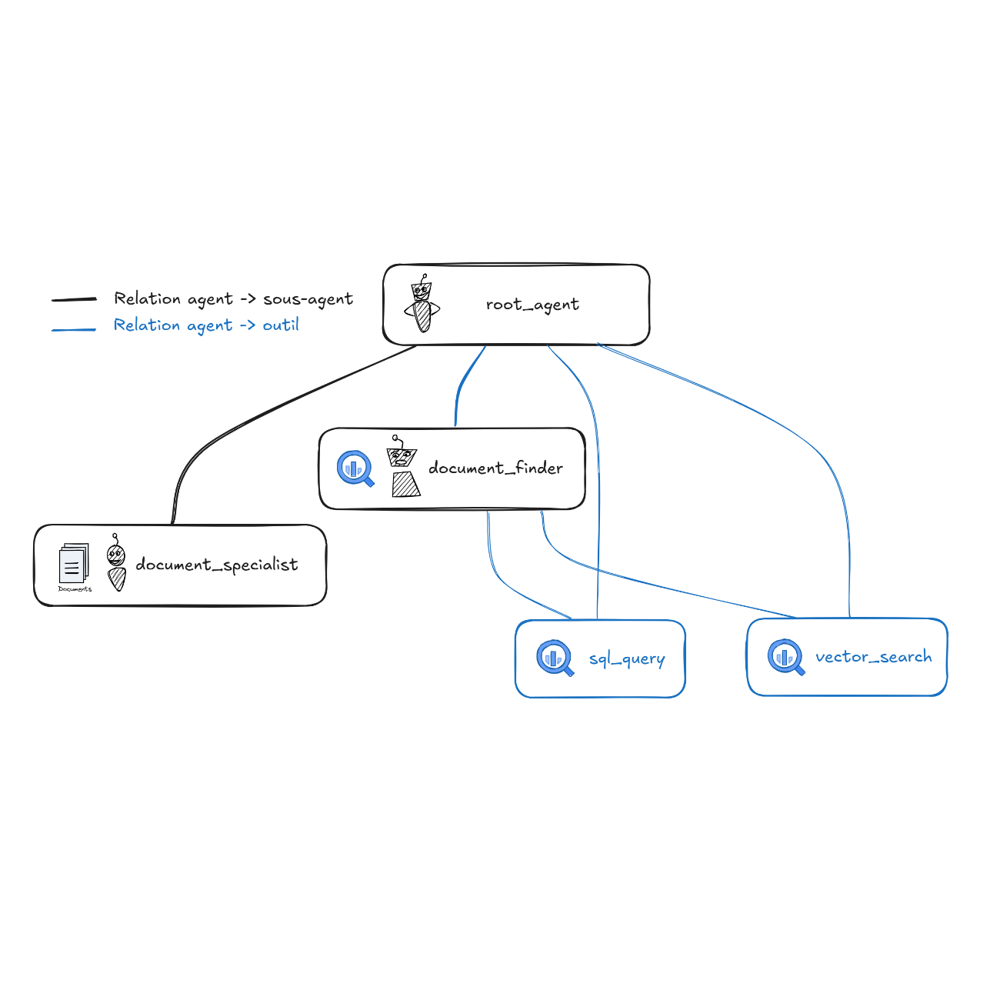
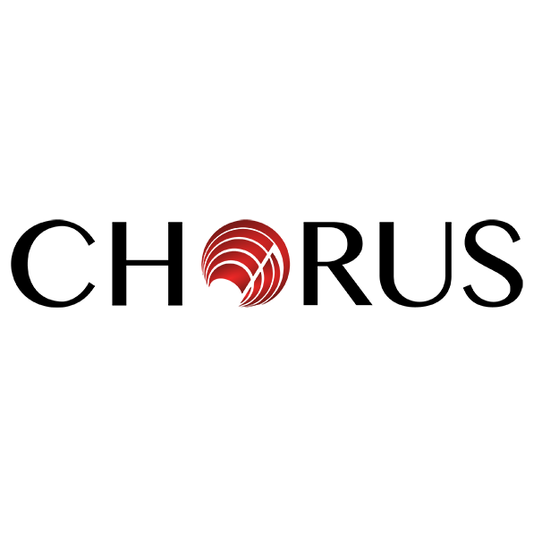
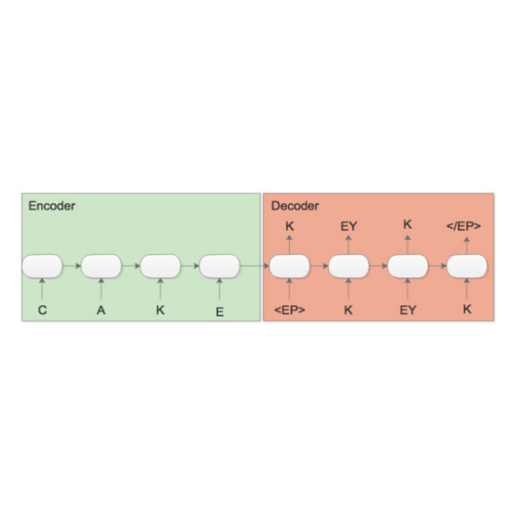
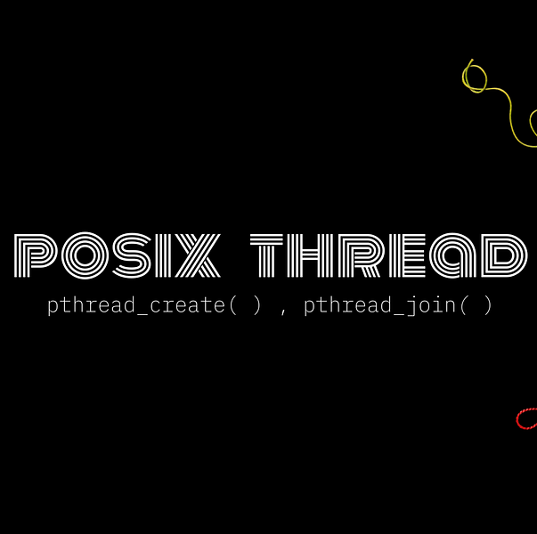
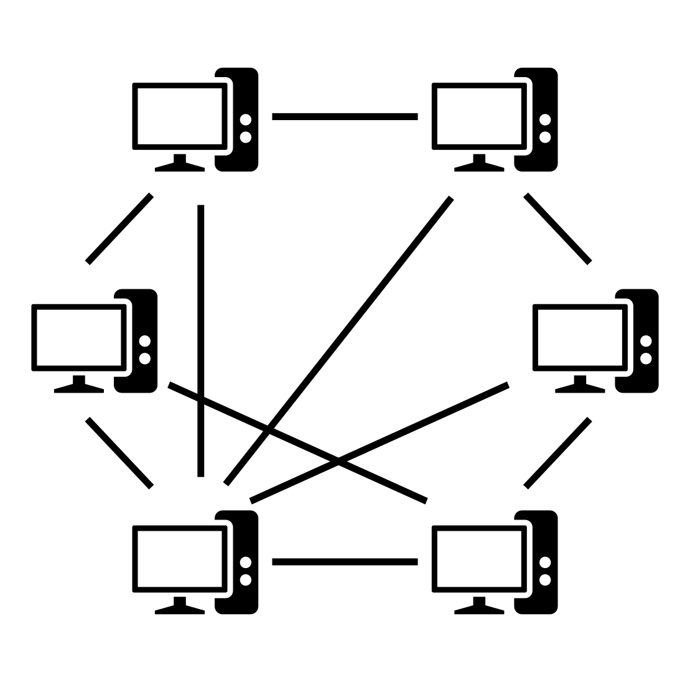

Meo Desbois-Renaudin
Data Scientist · Machine Learning Engineer

About Me
Hi, I’m Méo Desbois-Renaudin, a Data Scientist at Thales, working on NLP and transfer learning for language models within the Cell-IA team.
My current work and personal interests focus on foundation models, with the goal of understanding them through the lenses of Bayesian ML and adapting them to industrial applications. I actively seek to deepen my understanding of these topics through both applied and research-oriented projects.
I recently graduated from a diplôme d'ingénieur (MSc) in Computer Science at ENSEIRB-MATMECA Bordeaux, during which I completed internships at LPSC in software engineering and at Thales where I built RAG pipelines and worked on LLM agents.
Outside of work, I enjoy sports and have a lifelong love for the mountains, having grown up in a small mountain town where competitive skiing was a central part of my childhood.
Contact : meo.desbois@gmail.com
Personal projects

Preprint: A Comparative Study of CNN and MLP Neural tangent kernels
Derivation of the NTK for a simple non translation equivariant CNN architecture, study of the NTK Gram matrix sprectral propoerties and convergence regimes.
Preprint . Repository . 2026

ARC prize 2025: How can LLMs represent themselves 2D?
Experimented new 2D Positionnal embeddings and non-linear generation schemes to enhance the 2024 state-of-the-art solution
2025 . Repository
Professionnal projects


Teaching

Math and physics tutor (High school)
Tutored for a year 3 international high school students from Hong Kong (French program). Each on individual weekly or biweekly sessions.
2023
Academic projects
Applied Data Science & Time Series Analysis
Explored a wide range of machine learning, data preparation, and time-series analysis techniques on 4 specific datasets.
2025 @ IST Lisboa . Repository

Phoneme to Grapheme conversion with transformer model
Built a transformer encoder-decoder to convert English words (graphemes) to their phonetic representation (phonemes). Implemented in PyTorch.
2024 @ IST Lisboa

Reimplementing POSIX standard threading lib
Recoded from scratch in C a equivalent of the phtread lib, optimizing for speed. From basic features to scheduling, preemption and concurrency.
2023 @ ENSEIRB-MATMECA . Repository

Peer to peer network
Built a multi-theaded Peer-to-Peer (P2P) file-sharing system with a central tracker and multiple peers. Implemented in C and Java.
2023 @ ENSEIRB-MATMECA . Repository
Events
- 2026 Dataquitaine — Regional conference: Presented with J. Meynard my R&D work on VLM fine-tuning for Thales
- 2025 Hack1robo — Hackathon: Trained a Vision Language Action model to teach drawing to a LeRobot arm : code
- 2020 Prologin (Finalist) — French National Computer Science contest
Contact
meo.desbois@gmail.com
+33 6 07 76 63 15